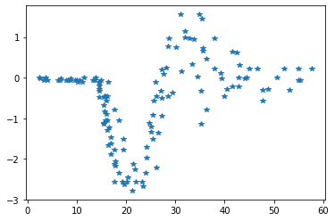
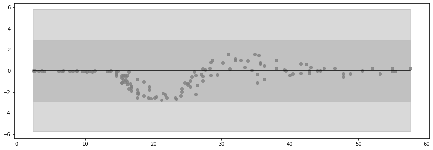
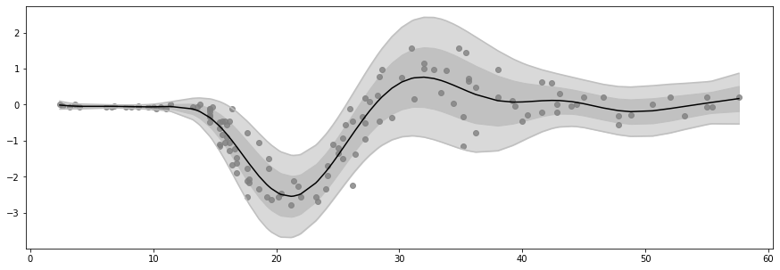

Heteroskedastic Regression¶
[1]:
import gpflow as gpf
import matplotlib.pyplot as plt
import numpy as np
import tensorflow as tf
import tensorflow_probability as tfp
from src.models.tsvgp import t_SVGP
rng = np.random.RandomState(123)
tf.random.set_seed(42)
2021-12-13 23:55:20.438431: W tensorflow/stream_executor/platform/default/dso_loader.cc:64] Could not load dynamic library 'libcudart.so.11.0'; dlerror: libcudart.so.11.0: cannot open shared object file: No such file or directory; LD_LIBRARY_PATH: /opt/hostedtoolcache/Python/3.7.12/x64/lib
2021-12-13 23:55:20.438463: I tensorflow/stream_executor/cuda/cudart_stub.cc:29] Ignore above cudart dlerror if you do not have a GPU set up on your machine.
Loading motorcycle accident data¶
[2]:
csv_data = np.loadtxt("data/mcycle.csv", delimiter=",", skiprows=1)
X = csv_data[:, 0].reshape(-1, 1)
Y = csv_data[:, 1].reshape(-1, 1)
data = (X, Y)
N = len(X)
Y /= Y.std()
plt.figure()
plt.plot(X, Y, "*")
plt.show()

Declaring heteroskedastic regression model¶
[3]:
likelihood = gpf.likelihoods.HeteroskedasticTFPConditional(
distribution_class=tfp.distributions.Normal, # Gaussian Likelihood
scale_transform=tfp.bijectors.Exp(), # Exponential Transform
)
kernel = gpf.kernels.SeparateIndependent(
[
gpf.kernels.SquaredExponential(), # This is k1, the kernel of f1
gpf.kernels.SquaredExponential(), # this is k2, the kernel of f2
]
)
# Initial inducing points position Z
M = 50
Z = np.linspace(X.min(), X.max(), M)[:, None] # Z must be of shape [M, 1]
inducing_variable = gpf.inducing_variables.SharedIndependentInducingVariables(
gpf.inducing_variables.InducingPoints(Z),
)
m_tsvgp = t_SVGP(kernel, likelihood, inducing_variable, num_data=N, num_latent_gps=2)
2021-12-13 23:55:22.742167: W tensorflow/stream_executor/platform/default/dso_loader.cc:64] Could not load dynamic library 'libcuda.so.1'; dlerror: libcuda.so.1: cannot open shared object file: No such file or directory; LD_LIBRARY_PATH: /opt/hostedtoolcache/Python/3.7.12/x64/lib
2021-12-13 23:55:22.742202: W tensorflow/stream_executor/cuda/cuda_driver.cc:326] failed call to cuInit: UNKNOWN ERROR (303)
2021-12-13 23:55:22.742221: I tensorflow/stream_executor/cuda/cuda_diagnostics.cc:156] kernel driver does not appear to be running on this host (fv-az37-217): /proc/driver/nvidia/version does not exist
2021-12-13 23:55:22.742476: I tensorflow/core/platform/cpu_feature_guard.cc:142] This TensorFlow binary is optimized with oneAPI Deep Neural Network Library (oneDNN) to use the following CPU instructions in performance-critical operations: AVX2 AVX512F FMA
To enable them in other operations, rebuild TensorFlow with the appropriate compiler flags.
Plot pre-training (a priori) prediction¶
[4]:
def plot_distribution(X, Y, loc, scale, index=0):
plt.figure(figsize=(15, 5))
x = X.squeeze()
for k in (1, 2):
lb = (loc - k * scale).squeeze()
ub = (loc + k * scale).squeeze()
plt.fill_between(x, lb, ub, color="silver", alpha=1 - 0.05 * k ** 3)
plt.plot(x, lb, color="silver")
plt.plot(x, ub, color="silver")
plt.plot(X, loc, color="black")
plt.scatter(X, Y, color="gray", alpha=0.8)
plt.savefig("het.png")
plt.show()
Ymean, Yvar = m_tsvgp.predict_y(X)
Ymean = Ymean.numpy().squeeze()
Ystd = tf.sqrt(Yvar).numpy().squeeze()
plot_distribution(X, Y, Ymean, Ystd, -1)

Training model¶
[5]:
lr_adam = 0.1
lr_natgrad = 0.5
nit_e = 2
nit_m = 1
def E_step():
[m_tsvgp.natgrad_step((X, Y), lr_natgrad) for _ in range(nit_e)]
optimizer = tf.optimizers.Adam(lr_adam)
@tf.function
def M_step():
[
optimizer.minimize(m_tsvgp.training_loss_closure(data), m_tsvgp.kernel.trainable_variables)
for _ in range(nit_m)
]
Run Optimization¶
[6]:
nrep = 100
for r in range(nrep):
E_step()
M_step()
if r % 10 == 0:
print(r, m_tsvgp.elbo(data))
Ymean, Yvar = m_tsvgp.predict_y(X)
Ymean = Ymean.numpy().squeeze()
Ystd = tf.sqrt(Yvar).numpy().squeeze()
plot_distribution(X, Y, Ymean, Ystd, r)
2021-12-13 23:55:24.163067: W tensorflow/python/util/util.cc:348] Sets are not currently considered sequences, but this may change in the future, so consider avoiding using them.
WARNING:tensorflow:From /opt/hostedtoolcache/Python/3.7.12/x64/lib/python3.7/site-packages/tensorflow/python/util/deprecation.py:602: calling map_fn_v2 (from tensorflow.python.ops.map_fn) with dtype is deprecated and will be removed in a future version.
Instructions for updating:
Use fn_output_signature instead
2021-12-13 23:55:31.718971: I tensorflow/compiler/mlir/mlir_graph_optimization_pass.cc:176] None of the MLIR Optimization Passes are enabled (registered 2)
2021-12-13 23:55:31.817186: I tensorflow/core/platform/profile_utils/cpu_utils.cc:114] CPU Frequency: 2593905000 Hz
0 tf.Tensor(-244.0141761096637, shape=(), dtype=float64)
10 tf.Tensor(-115.99353998832385, shape=(), dtype=float64)
20 tf.Tensor(-95.72653671079357, shape=(), dtype=float64)
30 tf.Tensor(-85.20390362135282, shape=(), dtype=float64)
40 tf.Tensor(-81.74011974935769, shape=(), dtype=float64)
50 tf.Tensor(-80.39603520178204, shape=(), dtype=float64)
60 tf.Tensor(-79.70508997068534, shape=(), dtype=float64)
70 tf.Tensor(-79.27599221057581, shape=(), dtype=float64)
80 tf.Tensor(-78.97527493119404, shape=(), dtype=float64)
90 tf.Tensor(-78.75039102141346, shape=(), dtype=float64)
